I tuoi pagamenti al ritmo del tuo calendario.
Pianifica bollette e abbonamenti, imposta promemoria e mantieni una chiara panoramica mensile. I tuoi dati rimangono sul dispositivo.
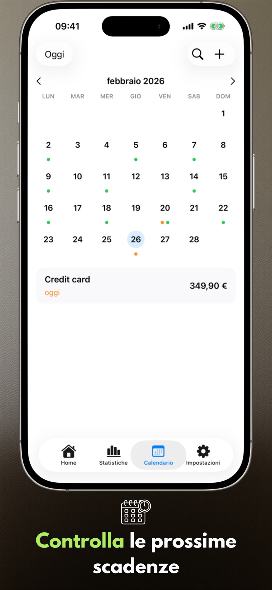
Novità della versione 2.3.1
- I widget funzionano in modo più affidabile.
- L’elenco dei pagamenti viene visualizzato correttamente su Mac.
Schermate dell'app
Sei schermate chiave su iPhone e iPad che mostrano il ritmo di pianificazione con Payment Calendar.
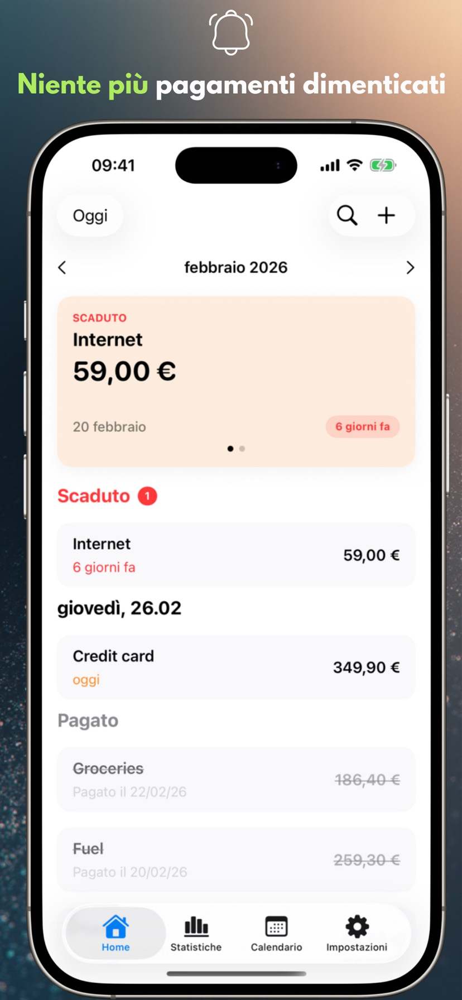
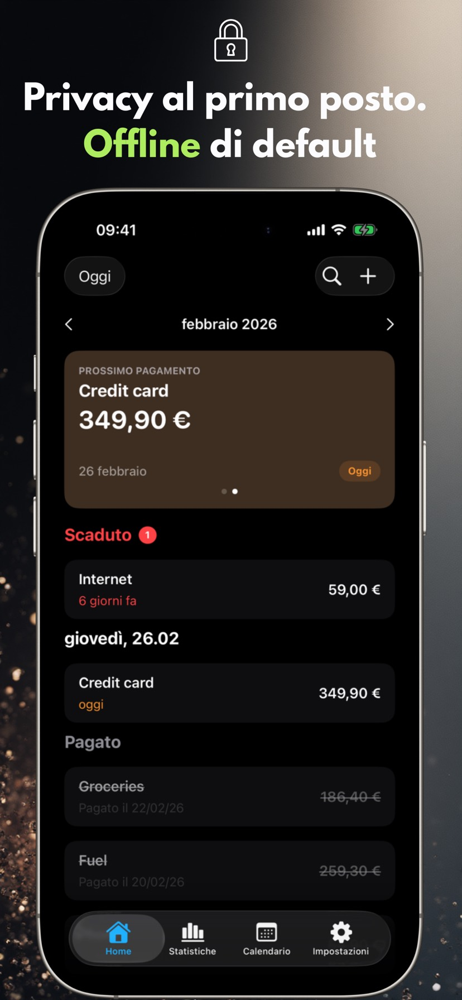
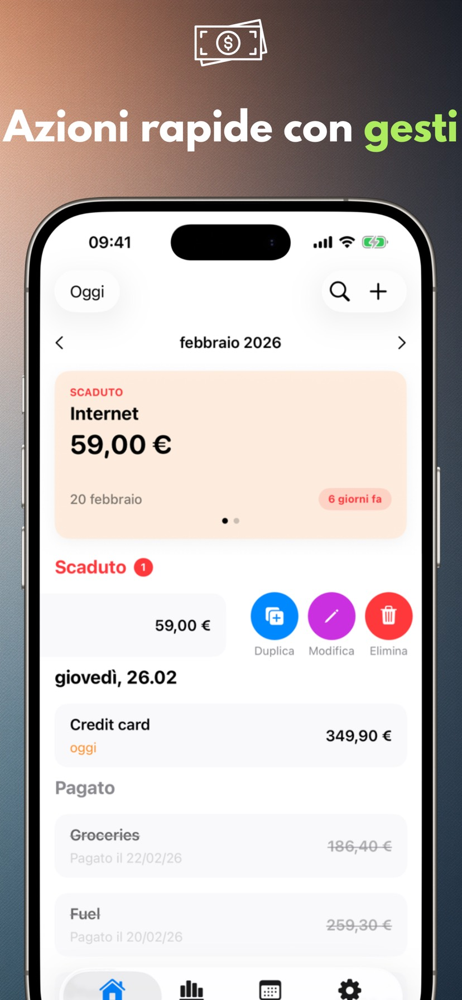
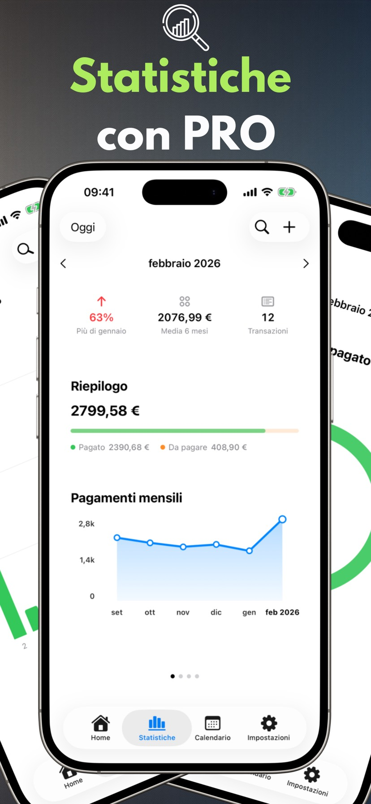
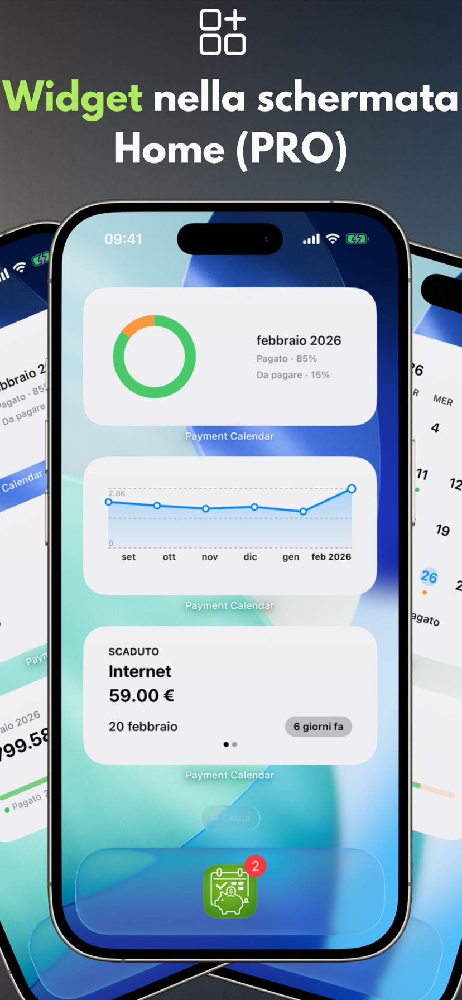
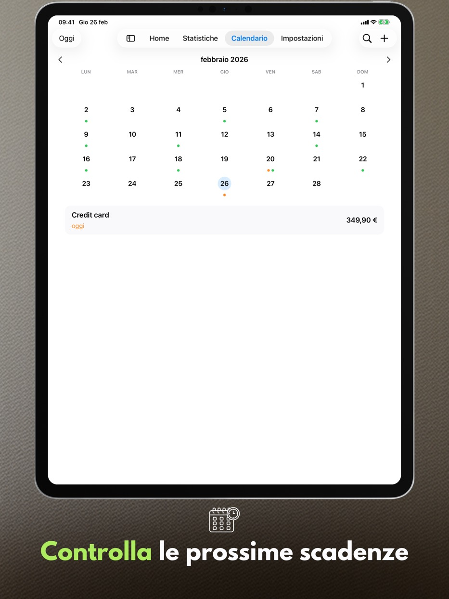
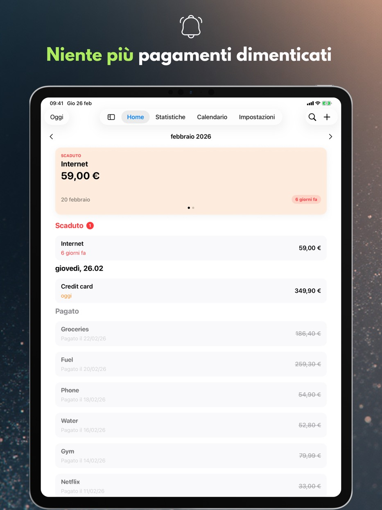
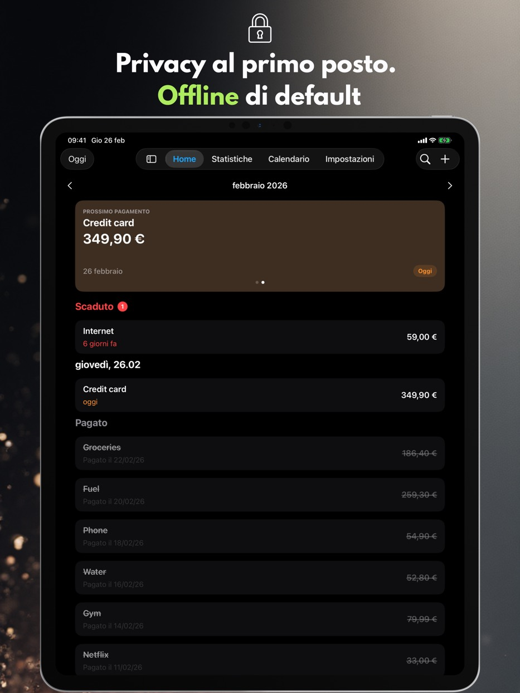
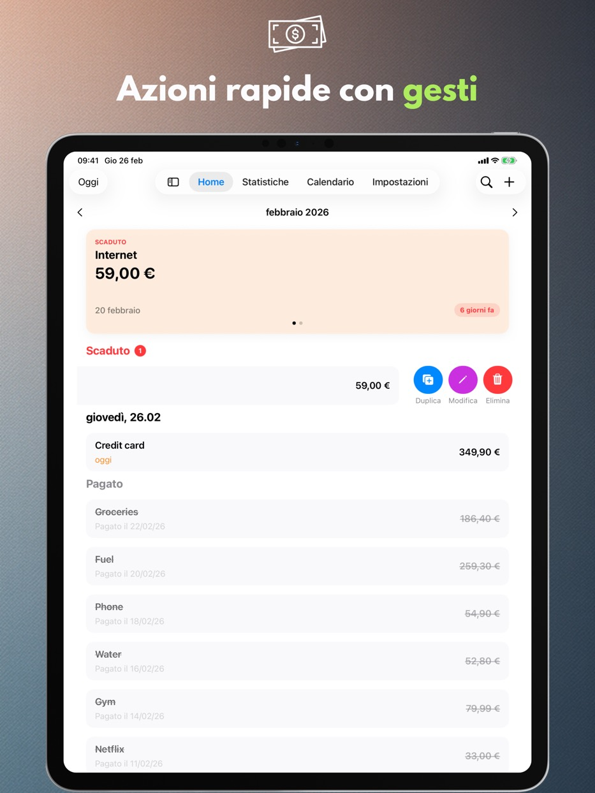
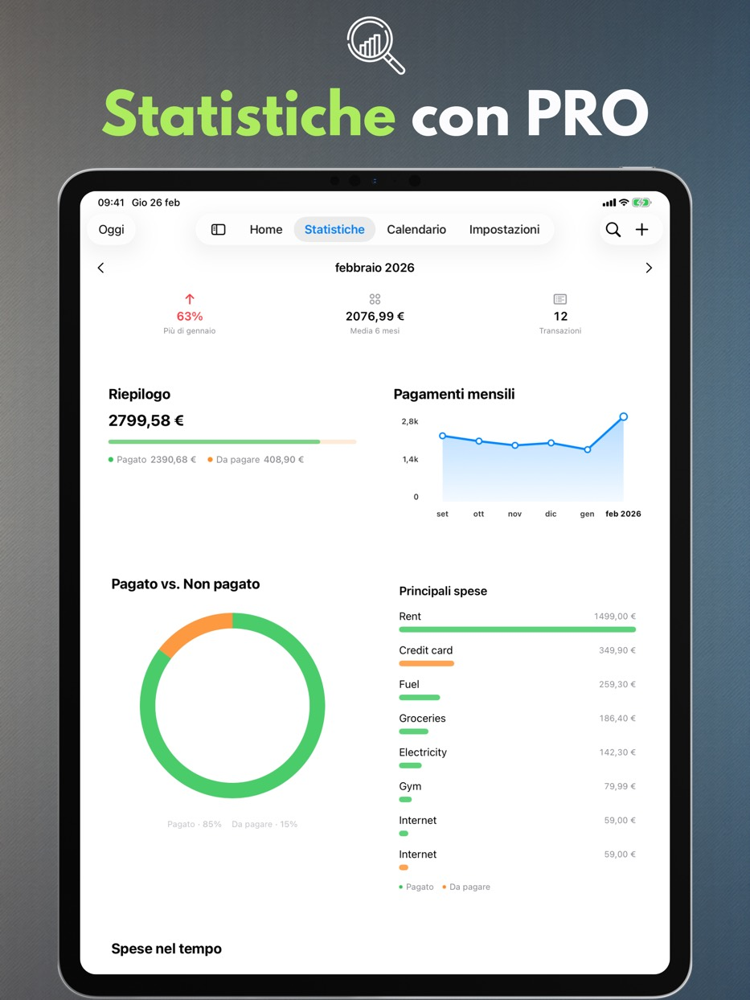
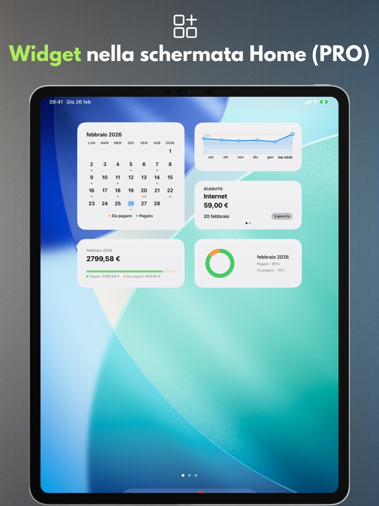
Funzioni dell'app
Tutto quello che segue funziona gratuitamente e senza account: una vista del mese chiara, inserimento rapido dei pagamenti e promemoria per pianificare le spese con calma.
Calendario pagamenti
Visualizza le scadenze imminenti e la tua lista pagamenti in un unico posto.
Promemoria
Ricevi notifiche il giorno della scadenza o alcuni giorni prima.
Gesti e azioni rapide
Segna come pagato, modifica o duplica con uno scorrimento.
Ricerca
Trova pagamenti per nome, importo o note.
Impostazioni personali
Valuta, inizio settimana, design e un layout che si adatta a te.
Supporto per iPad
Modalità finestra e Split View, oltre a tastiera e abbreviazioni da tastiera.
Cestino
I pagamenti eliminati restano nel Cestino per 30 giorni — puoi ripristinarli.
Accessibilità
L'app segue la dimensione del testo di sistema, rispetta «Riduci movimento» e non indica mai lo stato di un pagamento solo con il colore.
Privacy
I tuoi dati rimangono sul dispositivo.
Payment Calendar non richiede un account e non traccia le tue attività. La sincronizzazione iCloud è opzionale e disabilitata per impostazione predefinita.
Nessuna pubblicità, nessuna analisi
Non utilizziamo SDK di terze parti per analisi o pubblicità.
Controllo dei dati
Elimina i tuoi dati in qualsiasi momento dall'app o rimuovendola.
Funzionalità PRO
Un'estensione a pagamento: statistiche, widget, pagamenti ricorrenti, sincronizzazione ed esportazione. Puoi scegliere l'abbonamento mensile, annuale o l'acquisto una tantum a vita.
Statistiche e tendenze
Riepiloghi mensili più vista tendenze a 6 mesi.
Widget
Quattro widget per la schermata Home: prossimo pagamento, riepilogo del mese, andamento e griglia del mese.
Pagamenti ricorrenti
Crea automaticamente pagamenti ricorrenti.
Sincronizzazione iCloud
Mantieni i dati sincronizzati tra i tuoi dispositivi, se abilitata.
Esporta CSV/PDF
Condividi riepiloghi o archivia i tuoi dati.
Lingue disponibili
Payment Calendar supporta polacco, inglese, spagnolo, tedesco, francese, italiano, ucraino, svedese, cinese semplificato, giapponese e portoghese (Brasile).
Domande frequenti (FAQ)
Trova risposte rapide alle domande più frequenti su Payment Calendar.
Prima di scaricare
Come posso non dimenticare di pagare una bolletta?
Payment Calendar mostra tutti i pagamenti in arrivo nella vista mensile e invia promemoria prima della scadenza, così sai in anticipo cosa devi pagare e quando.
Come posso tenere traccia degli abbonamenti per non pagare quelli che non uso più?
Aggiungi gli abbonamenti come pagamenti ricorrenti (funzione PRO) — l’app ti ricorda automaticamente i rinnovi in arrivo, così è più facile individuare e cancellare quelli che non usi più.
Esiste un’app come un calendario, ma per bollette e pagamenti?
Sì, è esattamente l’idea di Payment Calendar — la vista mensile mostra i pagamenti al posto degli eventi, indicando cosa è già pagato e cosa è ancora in scadenza.
Come posso gestire i pagamenti senza creare un account?
Payment Calendar non richiede registrazione né accesso — installi l’app e inizi subito ad aggiungere pagamenti. I dati restano sul dispositivo, a meno che tu non attivi la sincronizzazione iCloud opzionale.
In cosa differisce Payment Calendar da un normale calendario dello smartphone?
Un calendario normale mostra eventi, non pagamenti — non ha uno stato "pagato / da pagare", promemoria pensati per le bollette né una panoramica delle spese. Payment Calendar è progettato appositamente per i pagamenti: con importi, valute, ricorrenza e statistiche su quanto spendi realmente ogni mese.
Le basi
Che cos’è l’app Payment Calendar?
Payment Calendar è un’app per iPhone e iPad (iOS/iPadOS) per tenere traccia di bollette e pagamenti imminenti in formato calendario. Ti aiuta a vedere subito cosa sta per scadere e a segnare i pagamenti come effettuati.
L’app funziona offline?
Sì. L’app funziona offline e non richiede account né connessione Internet. I dati vengono salvati localmente sul dispositivo. La sincronizzazione iCloud opzionale (nella versione PRO) consente l’accesso su più dispositivi Apple.
Su quali dispositivi funziona Payment Calendar?
L'app funziona su iPhone e iPad con iOS/iPadOS 18.0 o successivo. Puoi installarla anche su un Mac con Apple silicon, dove funziona come app per iPad («Designed for iPad») e non come una versione separata per macOS.
Privacy e dati
I miei dati finanziari sono al sicuro?
Sì. Payment Calendar non raccoglie dati utente e non richiede accesso. I dati restano sul tuo dispositivo e la sincronizzazione iCloud opzionale (nella versione PRO) avviene all’interno dell’ecosistema Apple.
Payment Calendar si collega al mio conto bancario?
No. Payment Calendar non si collega alla tua banca né scarica automaticamente le transazioni — i pagamenti li aggiungi manualmente. È una scelta precisa: l’app punta sulla privacy fin dall’inizio e non ha bisogno di accedere al tuo conto bancario per funzionare.
Funzionalità
Posso aggiungere pagamenti ricorrenti e abbonamenti?
Sì. Puoi aggiungere pagamenti ricorrenti, come abbonamenti e bollette mensili. Questa funzione è disponibile nella versione PRO.
L’app invia promemoria per i pagamenti imminenti?
Sì. Puoi impostare promemoria per non perdere nessun pagamento.
Quali valute supporta Payment Calendar?
L'app supporta 22 valute, tra cui dollaro statunitense, euro, sterlina, franco svizzero, corone ceca, svedese, norvegese e danese, fiorino, grivnia, yen, yuan, real, oltre a peso colombiano, tugrik mongolo, peso messicano, peso cileno e dollaro neozelandese. La formattazione (simboli, separatori, arrotondamenti) si adatta automaticamente alla regione del tuo dispositivo.
Posso esportare i miei pagamenti?
Sì, nella versione PRO. Puoi esportare i dati in un file CSV o PDF, ad esempio per un report o per archiviarli.
Posso correggere la data effettiva di pagamento?
Sì. Il modulo di modifica di un pagamento effettuato ha un campo "Pagato" in cui puoi impostare la data effettiva del pagamento. Le statistiche continuano a raggruppare i pagamenti in base alla scadenza, non alla data di pagamento.
C’è un widget per la schermata home?
Sì, nella versione PRO. Puoi scegliere tra quattro widget per la schermata Home: prossimo pagamento, riepilogo del mese, andamento delle spese e griglia del mese — tutti senza aprire l'app.
Ho eliminato un pagamento per sbaglio — posso recuperarlo?
Sì. I pagamenti eliminati finiscono nel Cestino e vi restano per 30 giorni. Trovi il Cestino nelle Impostazioni e ripristinare una voce richiede un solo tocco.
Payment Calendar è un’app per la gestione del budget familiare?
No. È un calendario delle bollette che aiuta a monitorare pagamenti imminenti e già effettuati. Non gestisce entrate, saldi del conto o budget.
Sincronizzazione e lingue
I dati si sincronizzano tra iPhone e iPad?
Sì, se attivi la sincronizzazione iCloud opzionale (funzione PRO) — i tuoi pagamenti saranno disponibili su tutti i dispositivi Apple collegati allo stesso account iCloud. Senza questa opzione, i dati restano localmente su un solo dispositivo.
In quali lingue è disponibile l’app?
Payment Calendar è disponibile in 11 lingue: polacco, inglese, spagnolo, tedesco, francese, italiano, ucraino, svedese, cinese semplificato, giapponese e portoghese (Brasile).
Piattaforme
Payment Calendar è disponibile per Android?
No. Payment Calendar è un'app per iPhone e iPad (iOS/iPadOS); sui Mac con Apple silicon funziona in modalità «Designed for iPad». Non esiste una versione per Android.
Esiste una versione per Apple Watch?
Non ancora, ma il supporto per watchOS è tra i piani di sviluppo dell’app.
Prezzo e PRO
Posso usare l’app senza un abbonamento a pagamento?
Sì. Le funzioni di base sono gratuite. Le funzioni PRO, come pagamenti ricorrenti e sincronizzazione iCloud, richiedono un abbonamento o un acquisto una tantum.
Quanto costa la versione PRO e posso annullare l’abbonamento?
Il prezzo varia in base alla regione ed è visibile nell’app e su App Store. Puoi scegliere tra abbonamento mensile, annuale o acquisto una tantum a vita (Lifetime). Gestisci e annulli l’abbonamento nelle impostazioni del tuo Apple ID, come qualsiasi altro abbonamento su App Store.
Assistenza
Manca una valuta o ho un’idea per una nuova funzione — cosa posso fare?
Scrivimi a payment_calendar@icloud.com. Leggo e rispondo personalmente a ogni e-mail — le segnalazioni e le idee degli utenti arrivano davvero nelle versioni successive.
Pronto per una pianificazione dei pagamenti più serena?
Payment Calendar tiene traccia di ogni scadenza.